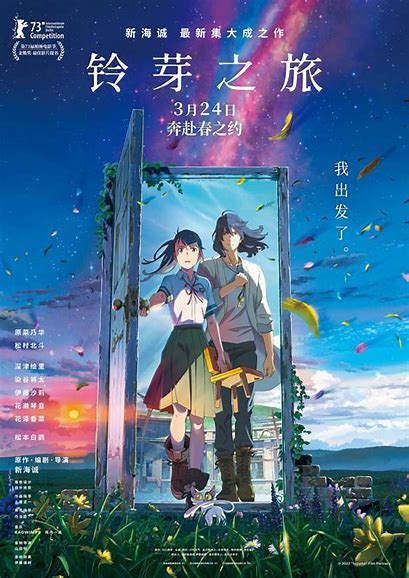
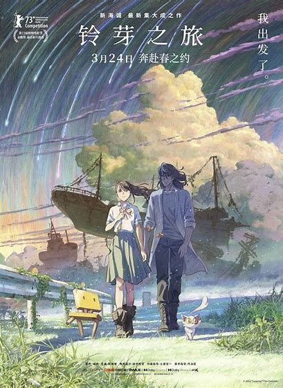

电影 《铃芽之旅》
《铃芽之旅》是新海诚执导的一部奇幻动画电影，于 2022 年 11 月 11 日在日本上映，2023 年 3 月 24 日于中国内地上映。
影片主角是 17 岁的少女铃芽。故事起始于她在九州的一场奇遇，偶然间她打开了一扇通往神秘异世界的门，从此踏上了关闭各地灾难之门的冒险之旅。在旅途中，她结识了草太，而草太因意外被变成了一把椅子，这一奇特设定为故事增添了不少趣味与温情。铃芽带着这把会说话的椅子，穿越日本各地。他们所到之处皆面临着因门打开而逸出的灾厄，铃芽从最初的懵懂害怕逐渐成长为勇敢坚定的少女，她不顾危险，一次次奋力关上那象征着灾难与未知的门。
电影的画面堪称精美绝伦，新海诚对细节的把控一如既往地出色。无论是广袤的日本乡村田野，那随风摇曳的麦浪、古朴宁静的村落，还是繁华都市的街头巷尾，车水马龙、霓虹闪烁，都被描绘得细致入微。光影的变幻更是营造出如梦如幻的氛围，比如阳光洒在古老的石阶上，或是月光笼罩着神秘的废墟，都让观众仿佛身临其境。
其音乐也与画面相得益彰，动人的旋律在关键时刻烘托出紧张、感人或空灵的情绪。主题曲更是为影片增色不少，旋律悠扬且富有感染力，能够轻易地触动观众内心最柔软的角落。
影片主题深刻而多元，不仅有对自然灾难的思考与敬畏，更展现了铃芽在经历中的自我救赎与心灵成长。铃芽在关门的过程中，也逐渐关闭了内心因过去创伤而敞开的 “门”，重新拥抱生活与希望。这部电影以奇幻的冒险为载体，带领观众领略日本的风土人情，同时深入探索人性与情感的深邃世界，给观众带来一场视觉与心灵的双重盛宴，让人为之欢笑、为之落泪、为之深深着迷，也让观众在观影后对生命、自然与爱有了更深的感悟与思考。